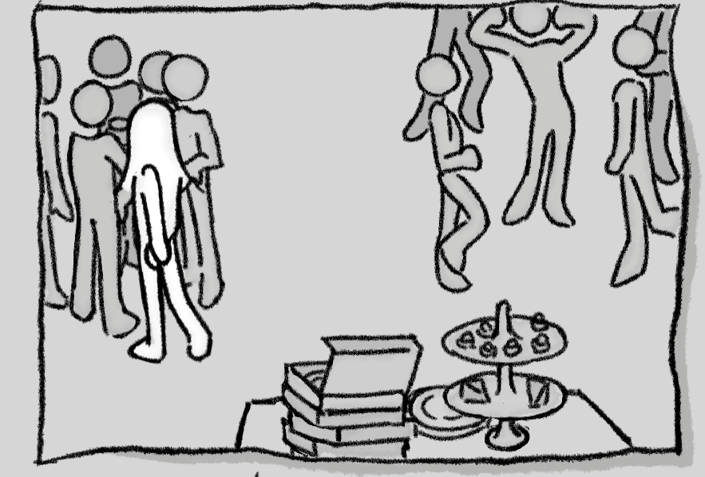

Gameplay Video
Description
A black-and-white sketch-style interactive personality test designed during the Gamerella Game Jam. The experience gamifies a series of choices and responses, allowing players to discover personality outcomes through simple interactions and visual feedback.
The project's theme was "Human-Made," so the interface leaned into hand-drawn visuals and intentionally imperfect sketches to emphasize a human touch over polished digital aesthetics.
UX Focus
- Designed the interaction flow for a gamified personality quiz.
- Created hand-drawn UI elements and buttons to match the human-made visual theme.
- Focused on simple click interactions to keep the experience intuitive and accessible.
- Collaborated with a team of three to rapidly prototype and iterate the interface during the jam.
Design Decision: Embracing Imperfection
Instead of polished UI, the interface uses hand-drawn buttons and sketch-style visuals to reinforce the "human-made" theme. This aesthetic choice also makes the interaction feel playful and approachable, aligning with the personality-test format.
